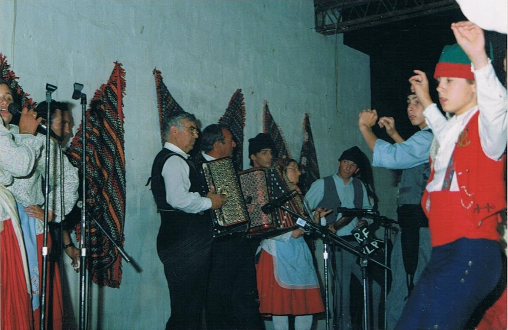
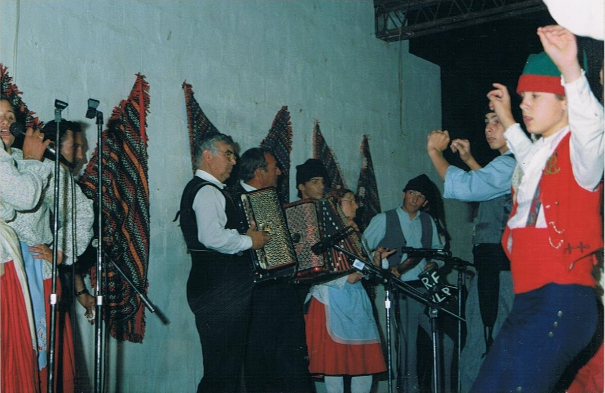

Tempo: Passado e Presente
A História
Alpiarça, Vila Ribatejana, situada na margem esquerda do Rio Tejo, a poucos quilómetros de Santarém, onde a presença humana data dos primórdios da humanidade. A variedade de trajes do tempo que queremos aqui retratar é bastante grande. Isto porque as características desta Região Ribatejana ofereceram a este povo uma multiplicidade de ocupações, criando-se assim um trajar que variava da Lezíria para a Charneca, do Tejo para os Campos, da grande casa agrícola à pequena habitação, etc. Cada traje, ou parte dele, seja para mulheres, homens, casados, crianças, idosos, viúvos, luto, noivado, etc, etc, tem sempre as suas exigências de qualidade e de composição decorativa. O traje é sempre uma bandeira, que simboliza e exprime o carácter dos habitantes que o usam". Não é por acaso que o povo da Lezíria traja de cores garridas, com relevo para o colete do campino em dias festivos e para as saias usadas pelas mulheres desta região, que são encarnadas, enquanto dançam de forma viva e movimentada ao som de melodias estridentes e apressadas.
- Federação de Folclore Português
- As Danças
- A música
- As Canções
- Os Trajes
- O Fandango
Fundado em 1969, depois de um trabalho de recolha exaustivo, pretende representar as características dos usos e costumes dos nossos antepassados tendo sempre presente a transmissibilidade/ continuidade deste trabalho. São muitas as manifestações culturais em que temos participado, quer no país, quer no estrangeiro, nomeadamente França, Espanha, Itália, Alemanha, Jugoslávia e Grécia.
Baile de roda, modas para bailar e viras de várias modalidades - Eram as mais populares antigamente.
Acordeão, bilha, reque-reque, cana, ferrinhos - Dão alegria e vivacidade, expressa na velocidade, por vezes estonteante a que os dançarinos executam as danças, embelezadas com os característicos passos de sapateado e escovinha.
Marcadas por quadras populares que evocam o quotidiano da época, complementam todo este ritmo tão característico da região Ribatejana.
Domingueiros, Festivos, de Trabalho - Dão colorido e identificam o estrato social e profissão a que cada pessoa pertencia.
Dança que se espalhou por todas as províncias portuguesas desde o século XVII, adquiriu características bem próprias em cada região, de acordo com a personalidade das gentes. É no Ribatejo que ganha raízes mais profundas e se intitula de ex-libris desta região e demonstra bem o carácter viril e altivo do homem do Ribatejo.
O Fandango
"O autêntico fandango aparece-nos na pessoa do campino, que só se digna dançar de verdade, quando baila sozinho". Quer seja na lezíria quer seja na charneca, o fandango é o rei da dança no Ribatejo.- O Fandanguista
- A Dança
De cabeça erguida, corpo firme e pernas leves, estes são os requisitos necessários para ser um bom fandanguista. De polegares nas covas dos braços "fogoso e impaciente como um puro lusitano." Houve quem o definisse como dança inebriante, viril, alucinante, interpretada por garbosos e orgulhosos campinos, temerários e arrojados nas lides taurinas, pois dela não se pode excluir o trabalho na lezíria bem como o gosto e a força para enfrentar a braveza do touro.
Dança típica ribatejana situada na margem esquerda do rio tejo, oriunda de Espanha, entrou em Portugal no sec. XIX mas só no ribatejo é que ganhou cunho viril e altivo dos homens da borda d’água. Ficou marcada devido a dois homens que se apaixonaram pela mesma mulher e ela para não enganar nenhum, impôs que dançassem um duelo de sapateado até que um desistisse de cansaço e assim conquistavam o coração da mulher amada.
Galeria de Memórias
...


 

Vídeos
...
| Folclore | ||
|---|---|---|
| Tradição | Cultura | Arte |
| Os usos e costumes dos nosso antepassados. | A transfusão das lembranças das memórias do passado. | Passado |
| As sensações | ||
| O sentimento |